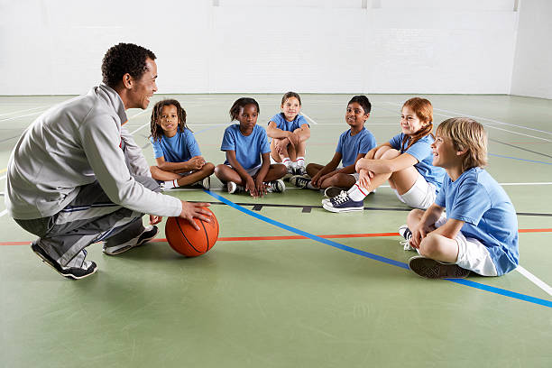

Sports
.jpg)
Football
Our Football program is where dribbling skills, goal-scoring magic, and team strategy collide on the pitch! With top-tier coaching and exhilarating drills, students hone their footwork, passing precision, and tactical game sense.
Our program isn't just about scoring goals; it's a pitch-perfect adventure where students embrace the thrill of the game, foster teamwork, and build sportsmanship that echoes beyond the field
Our program isn't just about scoring goals; it's a pitch-perfect adventure where students embrace the thrill of the game, foster teamwork, and build sportsmanship that echoes beyond the field

Basketball
Basketball program is where dribbling, shooting hoops, and slam dunks meet teamwork, adrenaline, and sheer excitement! With top-notch coaching and high-energy drills, students learn the art of ball handling, three-pointers, and defensive strategies.
Our program isn't just about perfecting layups; it's a slam-tastic journey where students embrace the fast-paced action, develop leadership skills, and foster a competitive spirit that echoes both on the court and in their everyday lives. So, get ready to hoop it up, have a blast, and score big with our electrifying Basketball program!
Our program isn't just about perfecting layups; it's a slam-tastic journey where students embrace the fast-paced action, develop leadership skills, and foster a competitive spirit that echoes both on the court and in their everyday lives. So, get ready to hoop it up, have a blast, and score big with our electrifying Basketball program!
.jpg)
Volleyball
The program isn't just about serving and spiking; it's a platform that cultivates teamwork, communication, and strategic thinking among students. Through expert coaching and team-oriented training, students learn the fundamentals of Volleyball, emphasizing skills such as serving, setting, and blocking.
Our program fosters not only athletic abilities but also camaraderie, leadership, and resilience, creating a supportive environment where students grow both as athletes and individuals, fostering a lifelong love for the sport and essential life values.
Our program fosters not only athletic abilities but also camaraderie, leadership, and resilience, creating a supportive environment where students grow both as athletes and individuals, fostering a lifelong love for the sport and essential life values.

Netball
Our Netball program is where precision passes, strategic moves, and high-flying teamwork take center stage! Through expert coaching and skill-building sessions, students master the art of passing, shooting, and defensive tactics on the court.
Our program isn't just about scoring goals; it's a whirlwind of fast-paced action, where students learn resilience, communication, and tactical thinking, creating a dynamic environment where every player shines as a vital part of the team.
Our program isn't just about scoring goals; it's a whirlwind of fast-paced action, where students learn resilience, communication, and tactical thinking, creating a dynamic environment where every player shines as a vital part of the team.
.jpg)
Athletics
Athletics program encompasses a wide range of sports, including track events, field events like javelin, and various disciplines that foster resilience, speed, and agility.
Through specialized coaching and diverse training, students not only excel in sprinting, jumping, and throwing but also learn the value of perseverance, teamwork, and sportsmanship. Our Athletics program isn't solely about individual achievements; it's a platform where students develop a strong work ethic, goal-setting skills, and a passion for healthy competition, shaping them into well-rounded athletes equipped for success both on and off the track.
Through specialized coaching and diverse training, students not only excel in sprinting, jumping, and throwing but also learn the value of perseverance, teamwork, and sportsmanship. Our Athletics program isn't solely about individual achievements; it's a platform where students develop a strong work ethic, goal-setting skills, and a passion for healthy competition, shaping them into well-rounded athletes equipped for success both on and off the track.
.jpg)
Gymnastics
At Triza Junior School, our Gymnastics program isn't just about flips and routines; it's a platform that nurtures flexibility, strength, and determination in students. With specialized coaching and tailored sessions, students learn the fundamentals of Gymnastics, emphasizing grace, precision, and perseverance.
Our program instills not only physical prowess but also confidence, focus, and the ability to set and achieve goals, creating well-rounded individuals who excel not just on the mat, but in various aspects of their lives.
Our program instills not only physical prowess but also confidence, focus, and the ability to set and achieve goals, creating well-rounded individuals who excel not just on the mat, but in various aspects of their lives.
.jpg)
Karate
At Triza Junior School, teaching students Karate goes beyond physical training; it instills discipline, self-control, and confidence. Through expert guidance and tailored lessons, students learn the fundamentals of Karate, focusing on technique, respect, and mental resilience.
Our Karate program emphasizes character development alongside physical skill, fostering a balanced approach where students grow not just as martial artists, but as individuals equipped with essential life values and a strong sense of self.
Our Karate program emphasizes character development alongside physical skill, fostering a balanced approach where students grow not just as martial artists, but as individuals equipped with essential life values and a strong sense of self.